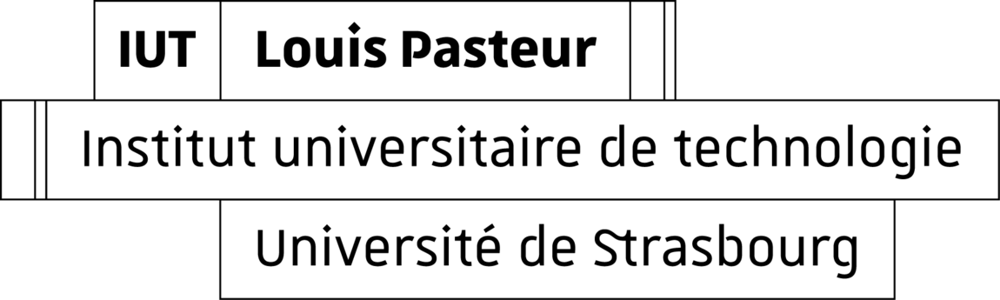

Je suis docteure et PRAG de mathématiques.
Je travaille à l'IUT Louis Pasteur de Schiltigheim.
67300 Schiltigheim
E-mail : v.callet-feltz_at_unistra.fr
Mon CV (Juin 2025).

Mes enseignements
J'enseigne les mathématiques à l'IUT Louis Pasteur de Schiltigheim dans le département Génie biologique.
J'interviens également dans les filières Mesures Physiques et Génie Industriel et Maintenance.
Auparavant, j'ai été enseignante contractuelle à l'INSA de Strasbourg.
Durant mon doctorat, j'ai effectué plusieurs missions d'enseignements à l'UFR math-info de Strasbourg.
J'ai également dispensé des khôlles en classe préparatoire BCPST1 au lycée Jean Rostand de Strasbourg.
Mon travail de médiation
Je suis membre des associations Femmes & Mathématiques
et Femmes & Sciences.
J'interviens dans différentes actions de promotion de la place des femmes dans les milieux scientifiques
telles que
le RJMI, la journée Sciences, un métier de femmes ou encore les Cigognes.
J'effectue également des actions de vulgarisation autour de la thématique "Mathémusique".
Mon travail de recherche
J'ai réalisé ma thèse de doctorat à l'Institut de Recherche Mathématiques Avancées (IRMA)
sous la direction de Moreno Andreatta et Pierre Guillot. J'ai travaillé sur l'analyse topologique
de données musicales en utilisant l'homologie persistante et la transformée de Fourier Discrète.
Mon travail de thèse a été publié aux éditions Springer en juin 2025 : Persistent Homology and Discrete Fourier Transform.
|  |